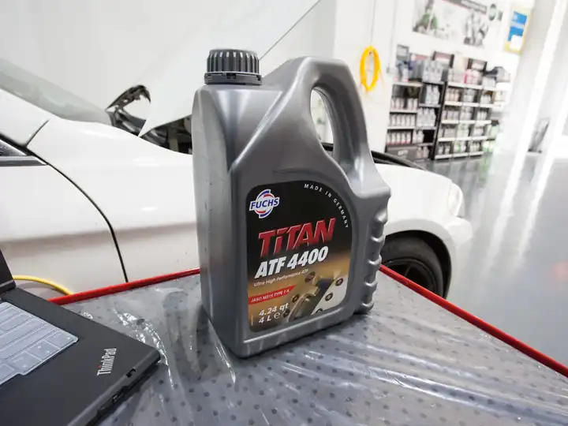
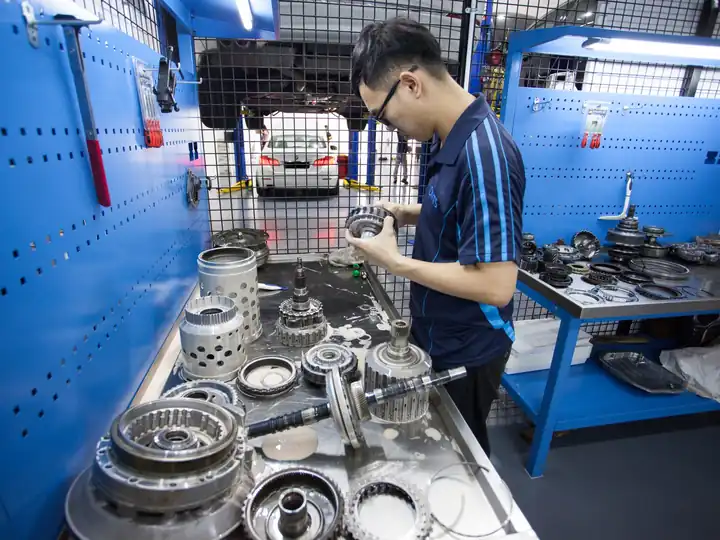

In short: first check whether your car has a gearbox dipstick at all. Some do, and many newer cars have a sealed gearbox with no dipstick, where the level is checked by a workshop. Where there is one, the fluid (ATF) is usually checked as your owner's manual describes, and it should look clear and red or reddish-brown, with no burnt smell, no milky or pink tint and no metal specks. Anything else is a reason to have it looked at.
Does your car have a gearbox dipstick?
It depends on the car. Some automatics have a gearbox dipstick near the engine, often with a differently coloured handle. Many newer cars have a sealed gearbox with no dipstick, so the level and fluid condition are checked at a workshop. Your owner's manual says which you have and, where there is a dipstick, how the maker wants it checked. The correct method differs between makers, including the engine temperature and the gear position, so follow the manual rather than a general rule.
What should healthy gearbox fluid look like?
Healthy ATF is normally clear and red or reddish-brown, depending on the fluid. It should not smell burnt. Fluid ages with heat and use, so it darkens over time, and that is not a fault on its own. How dark, and how it smells, is what to look at.
What do the colour and smell tell you?
- Clear red or reddish-brown, no burnt smell: normal.
- Dark brown or black, with a burnt smell: the fluid is old or has overheated. Get it checked and ask whether it should be changed. See how often to change gearbox oil.
- Milky, pink or foamy: water or coolant may have got in. Do not keep driving. See milky or pink gearbox fluid.
- Fine metal specks or sludge: the gearbox may be wearing inside. It needs a proper inspection.
- A burnt smell from the gearbox area: see burning smell from the gearbox.
What if the level is low?
A low level usually means a leak, so topping up only fixes it for now. A red or brown drip under the car is worth checking early. See ATF leaking or low. Running with low fluid can overheat the gearbox, so have it found and fixed.
Should you check it yourself on a sealed gearbox?
No. Sealed gearboxes are filled and checked to the maker's procedure, which often involves the fluid temperature and a specific fill or check point. Opening the wrong plug can lose fluid or let dirt in. Ask a workshop to check the level and condition.
When should you get the gearbox checked?
- The fluid looks dark, smells burnt, is milky or pink, or has metal in it.
- You see a leak or the level is low.
- The gearbox slips, shifts harshly or jerks.
- A transmission warning light comes on.
Fluid condition alone does not prove what is wrong, so a test is the only way to know.
Can Jacky check your gearbox fluid?
Yes. Jacky diagnoses, tests and inspects every car himself, and the repair work is done in the workshop. The pre-repair diagnostic is from S$30, you get the fault and the price before any work starts, and repairs come with a 6-month warranty. See gearbox servicing for fluid changes and gearbox repair if there is a fault. If the car cannot move, we arrange free towing during office hours.
Not sure what your gearbox needs?
Jacky diagnoses and tests the gearbox himself and tells you the fault and the price before any work starts. Pre-repair diagnostic from S$30.
Questions
How do I check the automatic transmission fluid level?
What colour should automatic gearbox fluid be?
Why does my car have no gearbox dipstick?
Can I top up gearbox fluid myself?
Related services
Gearbox Maintenance & Servicing
Regular servicing of the auto transmission is as important as servicing the engine. We only use the manufacturer’s…
Learn more →
Gearbox Repair & Overhaul
We have a full range of diagnostic tools specialising in auto transmission to accurately identify the root cause.…
Learn more →Related gearbox problems
ATF leaking or low
Bright red oil (ATF) stains on the floor after the car has been parked for a while.
What it means →Burning smell
A sharp burning smell after driving, especially in stop-start traffic or after a long climb, sometimes with slipping or harsh shifts.
What it means →Transmission check light on
The engine or transmission check light comes on while driving. Some cars also hold one gear (often called “limp mode”) to protect the gearbox.
What it means →More articles
How Long Does an Automatic Gearbox Last, and What Shortens Its Life?
There is no fixed lifespan for an automatic gearbox. What makes one last longer or fail sooner, the warning signs to act on, and when a Singapore driver should get it checked.
Read article →29 October 2026What Are Gearbox Shift Solenoids and the Valve Body, and What Happens When One Fails?
What the valve body and shift solenoids do in an automatic gearbox, the signs one has failed, why it is not always a full overhaul, and how it is checked in Singapore.
Read article →27 October 2026Can You Tow an Automatic Car Without Damaging the Gearbox?
Is it safe to tow an automatic car with the wheels on the ground? Why it can damage the gearbox, when a flatbed is the safer choice, and what to do in Singapore.
Read article →